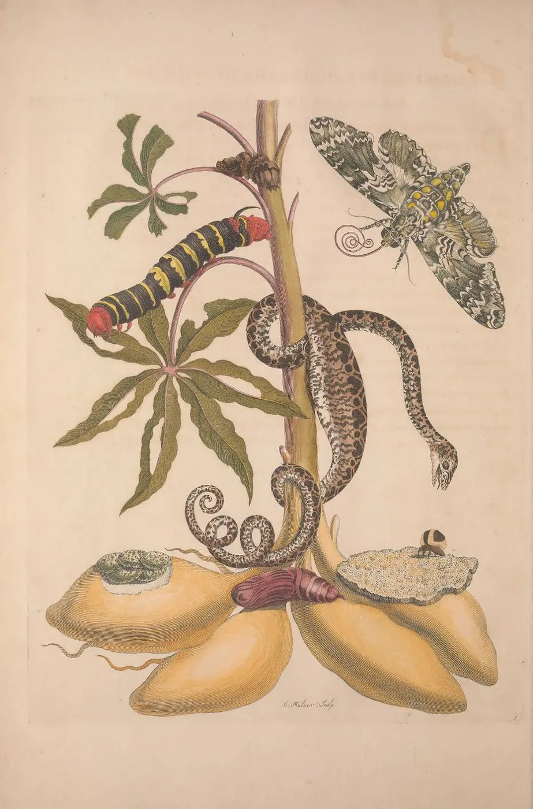

Metamorphosis insectorum Surinamensium, Plate 5
Maria Sibylla Merian · 1705 · Hand-coloured engraving · Smithsonian Libraries and Archives
Free to use
Merian added the snake, her text says, to decorate the plate, and judged from its swollen belly that it was carrying eggs, which she drew lying on the cassava root. The same text explains that the root's poisonous juice is pressed out before it is baked into bread. To pay for the journey she had sold 255 of her own paintings.